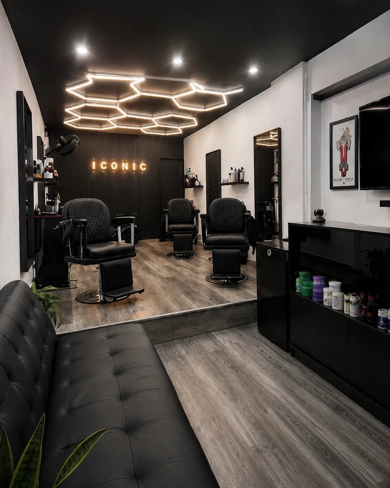

Que te encuentren
Cuando alguien busque "barbería en Kennedy" o "barbería en Hipotecho", que aparezca ICONIC BARBER de primero.
Para ti
Ya tienes WhatsApp Business, perfil en Google, redes sociales y reservas funcionando. iconicbarberbogota.com es la pieza que falta para unificar todo en un solo lugar profesional. Una página web propia hace que todos los canales trabajen juntos y apunten al mismo destino: tu negocio.

Cuando alguien busque "barbería en Kennedy" o "barbería en Hipotecho", que aparezca ICONIC BARBER de primero.
Una página bien presentada, con servicios, precios, fotos reales y ubicación, transmite más seriedad que cualquier red social.
Beunik y WhatsApp siguen siendo los canales para agendar, pero ahora los clientes llegan a través de un sitio profesional que los convence primero.
Así se ve lo que proponemos
La primera pantalla del sitio funciona como un acceso directo: reservar, WhatsApp, Instagram, Facebook y cómo llegar. Después aparecen los servicios, la ubicación y las preguntas frecuentes. Todo en una sola página rápida y profesional.
Kennedy: Hipotecho · Plaza de las Américas · Mundo Aventura
Agendar turno WhatsApp Instagram Facebook Cómo llegarCada red social puede usar el mismo enlace. Google también. Así el negocio no reparte su autoridad entre varios enlaces externos, sino que la concentra toda en su dominio propio.
La decisión importante
Beunik es perfecto para recibir reservas. Pero Google necesita una dirección oficial en internet que explique quién es ICONIC BARBER, dónde queda y a quién le sirve. Si el enlace de Google lleva directo a Beunik, se pierde la oportunidad de presentar el negocio como merece.
Todo apuntando al mismo lugar
Puedes usar el mismo enlace en Instagram, Facebook, WhatsApp, TikTok, Google Business Profile y cualquier directorio. La diferencia con herramientas como AllMyLinks es que este dominio te pertenece, nadie te lo puede quitar y construye tu marca.
Es la ficha que aparece cuando buscan tu barbería. Debe tener horarios reales, fotos auténticas, servicios y el enlace a tu web.
Presenta el negocio con tu cara, tus precios, tus fotos y tus palabras. Es la versión más profesional de ICONIC BARBER en internet.
No reemplazamos Beunik, lo ponemos en el lugar que le corresponde: recibir clientes listos para agendar, después de que la web los convenció.
Ideal para preguntas rápidas, horarios especiales, clientes nuevos o confirmar turnos. Desde la web se puede abrir con un solo clic.
Muestran el ambiente, los cortes, el estilo y la actividad real de la barbería. Todo con un enlace fijo a la web.
Ayudan a que el nombre, la dirección y el teléfono de ICONIC BARBER sean exactamente los mismos en toda la internet. Eso genera confianza.
Lo técnico explicado simple
No se trata solo de tener una página bonita. Cada pieza técnica cumple un trabajo específico: que Google te muestre, que los enlaces se vean profesionales, que la página vuele en celulares y que hasta las inteligencias artificiales puedan recomendar tu barbería.
La página está escrita pensando en quien busca "corte de cabello en Kennedy", "barbería en Hipotecho" o "barbero en Bogotá". Así Google te muestra a las personas correctas.
Cuando compartes el link por WhatsApp o redes, aparece con la imagen de ICONIC BARBER, el título y una descripción. No un link genérico.
Le decimos a Google, en su propio idioma, el nombre, dirección, teléfono, servicios, horarios y zona del negocio. Así te muestra con toda la información completa.
La página está construida con Astro, una tecnología que genera sitios ultralivianos. Carga en menos de un segundo en cualquier celular, consume pocos datos y obtiene puntuación perfecta en las pruebas de velocidad de Google.
La web incluye cabeceras de seguridad que protegen la información de quienes la visitan. Google valora los sitios seguros y los premia con mejor posición. Además, transmite confianza profesional.
Nombre, dirección y teléfono idénticos en la web, Google, redes y directorios. Esto evita confusiones y hace que Google confíe más en tu negocio.
También llamado Generative Engine Optimization (GEO). Los asistentes de inteligencia artificial (ChatGPT, Gemini, Siri) pueden leer la página y recomendar ICONIC BARBER cuando alguien pregunte por una barbería en Kennedy.
Podemos medir cuántos clics van a reservas, WhatsApp, Maps e Instagram. Así sabes qué canal trae más clientes y puedes decidir con datos, no con corazonadas.
Más que un bio link
Tener una página web propia permite incluir secciones que un simple enlace de redes no puede mostrar. Cada una de estas piezas cumple un propósito concreto dentro de la estrategia digital.
Mostrar los servicios con descripción y precio en la web evita que el cliente tenga que preguntar "¿cuánto vale?" por WhatsApp. Además, Google muestra los precios directamente en los resultados de búsqueda, lo que aumenta los clics.
Cuando los horarios están en la web, el cliente los encuentra al instante. También Google los muestra en el perfil de Business y en los resultados de búsqueda. Es información que trabaja las 24 horas del día sin que nadie tenga que responder.
Un mapa integrado y la dirección completa ayudan a que el cliente llegue sin tener que buscar en otro lado. También refuerza la señal local para Google: sabe exactamente dónde queda ICONIC BARBER y a quién sirve en Kennedy e Hipotecho.
Las FAQs bien escritas hacen dos cosas: responden las dudas más comunes del cliente (medios de pago, parqueadero, domicilios) y Google las muestra directamente en los resultados de búsqueda. Esto genera confianza antes de que el cliente entre a la página.
Las reseñas en Google Maps y en la web son una de las cosas que más pesan en la decisión de un cliente nuevo. Mostrarlas en la página y tenerlas activas en Google Business hace que lleguen más personas y con mayor confianza.
La web reúne servicios, precios, horarios, ubicación, FAQs, reseñas, redes y reservas. El cliente encuentra todo lo que necesita sin tener que rebotar entre aplicaciones. Google también encuentra todo ordenado y eso mejora tu posición.
Ruta de implementación
La estrategia digital no empieza de cero. Ya se hicieron varias cosas importantes. Lo que sigue es conectar todo a un solo lugar y dar el salto profesional.
Perfil de empresa creado, conectado con la plataforma de reservas y recibiendo mensajes de clientes.
Instagram y Facebook creados con contenido visual del local, los cortes y el ambiente de ICONIC BARBER.
Ficha de Maps creada, Google Business Profile con fotos, horarios, servicios. Clientes ya han reservado y dejado opiniones y calificaciones en el perfil de Maps. Esa reputación es parte clave de la estrategia.
Adquirir iconicbarberbogota.com, publicar la página web y apuntar Google Business, redes y WhatsApp al mismo enlace. Este es el paso que falta para unificar todo y que la estrategia esté completa.
Inversión necesaria
Para poner en marcha todo solo falta comprar el dominio. Estas son las opciones más comunes para que elijas la que prefieras.
Acuerdo propuesto
El negocio solo compra el dominio iconicbarberbogota.com y confirma que la estrategia va por buen camino. El desarrollo, el diseño, el SEO técnico y la publicación inicial los cubro yo.
Una estrategia digital completa como esta —con página web profesional, SEO local, optimización para IA, seguridad, rendimiento y todos los canales conectados— puede tener un valor de mercado entre 2.5M y 8M. ICONIC BARBER la recibe sin costo de desarrollo y además se queda con el dominio, la propiedad total del sitio y la libertad de administrarlo.
Cierre
Con la web como centro, cada publicación, reseña, mapa, mensaje y reserva fortalece la misma presencia digital: ICONIC BARBER en Kennedy, Bogotá.